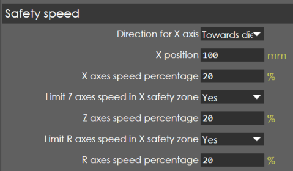
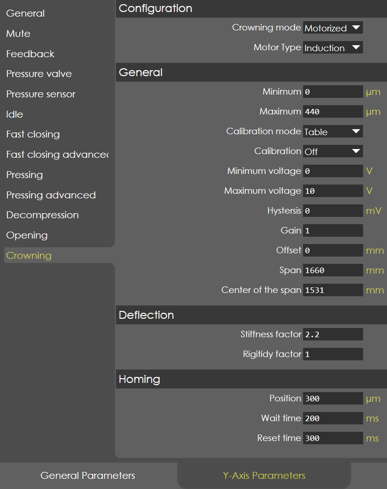
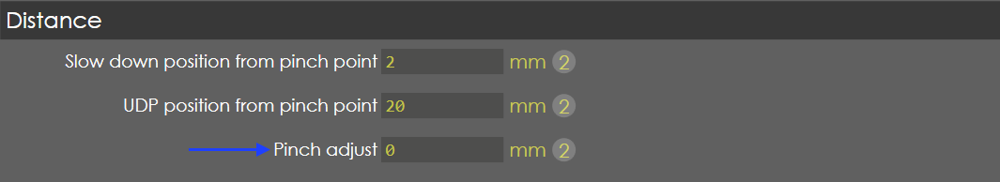

Machine Settings
General Parameters
Machine
Tools
General
Clamping Actions
Safety
Safety Speed

Under Machine Settings, navigate to Gerneral Parameters → Tools → Safety Speed.
Display
Safety
CAN Ports
PLC Options
Digital Input Config
Maintenance
Log
Diagnostic
Display
Digital Protractor
Barcode
Event Log
Y-Axis Parameters
General
Mute
Feedback
Pressure Valve
Pressure Sensor
Idle
Fast Closing
Fast Closing Advanced
Pressing
Pressing Advanced
Decompression
Opening
Crowning

Axis Parameters
X Axis
R Axis
Z1 Axis
Z2 Axis
Defaults
Bend Cycle
Speed
Distance

For certain work parts, the default pinch point value may not be sufficient to pinch the part.
Use the pinch adjust settings to change the default pinch point (value usually ranging from -5 to 5 mm)
| It is important to keep fingers and hands away from pinch point(s) all the time. |
Import/Export
Others